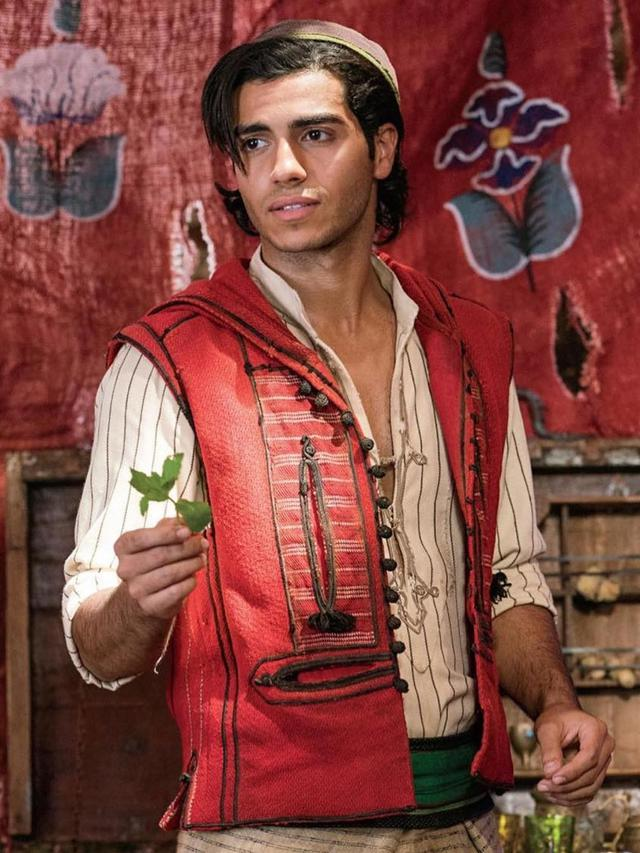

Mena Massoud

Mena Massoud was born on September 17, 1991. He is known for starring as Aladdin in Disney's musical fantasy film.
Naomi Scott

Naomi Grace Scott was born on May 6, 1993. She is known for starring as Princess Jasmine in Disney's musical fantasy film, Aladdin.
Will Smith
Williard Carroll Smith Jr was born on September 25, 1968. He is known for starring as Genie in Disney's musical fantasy film, Aladdin.
Marwan Kenzari

Marwan Kenzari was born on January 16, 1983. He is known for starring as Jafar in Disney's musical fantasy film, Aladdin.
Navid Negahban

Navid Negahban was born on June 2, 1968. He is known for starring as The Sultan in Disney's musical fantasy film, Aladdin.
Nasim Pedrad

Nasim Pedrad was born on November 18, 1981. She is known for starring as Dalia in Disney's musical fantasy film, Aladdin.
Nurman Acar

Nurman Acar was born on October 7, 1974. He is known for starring as Jafar's right-hand man in Disney's musical fantasy film, Aladdin.